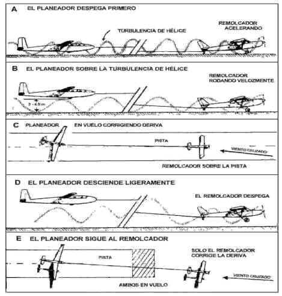

CURSO TEÓRICO
DE
PILOTO DE PLANEADOR
[ Arriba ] [ 1ª Sección ] [ 2ª Sección ] [ 3ª Sección ] [ 4ª Sección ] [ 5ª Sección ] [ 6ª Sección ] [ 7ª Sección ] [ 8ª Sección ] [ 9ª Sección ] [ 10ª Sección ] [ 11ª Sección ] [ 12ª Sección ] [ 13ª Sección ] [ 14ª Sección ] [ 15ª Sección ]
5ª Sección: DESPEGUES Y ATERRIZAJES NORMALES Y CON VIENTO CRUZADO
DESPEGUES Y ATERRIZAJES NORMALES
Propósito:
Un despegue y aterrizaje normales,
son el comienzo y el fin de cada vuelo de rutina.
Elementos:
a) Control de velocidad.
b) Control de la dirección en tierra
y en vuelo.
c) Planeamiento.
d) Coordinación.
Errores más comunes:
a) Deficiente control de la velocidad.
b) Planeamiento pobre.
c) Falla en el control de la
dirección en tierra.
d) Falla en dirigir propiamente la
visión durante el aterrizaje.
e) Adoptar una posición excesivamente
alta o variarla continuamente durante el remolque.
DESPEGUES NORMALES
Después de que el remolcador reciba
la señal para estirar la soga, moverá suavemente el avión hacia adelante hasta
lograrlo. Usualmente el piloto notará cuando la soga queda tensa; además el ayudante en
el ala del planeador levantará la mano para detener el movimiento del avión.
Después de una pequeña
demora, el remolcador verificará que las alas del planeador están niveladas y recibirá
la señal positiva para iniciar el despegue.
Si tuviera alguna duda en cuanto a la condición del
planeador, puede verificarlo moviendo en uno y otro sentido el timón de dirección del
avió hasta tanto reciba una respuesta similar del planeador.
Cuando el avión de remolque no tenga una visibilidad
adecuada para ver atrás estando en tierra, será preciso contar con un hombre para que
indique que la soga está tensa y se puede iniciar el despegue; el piloto entonces,
acelerará suavemente hasta lograr la máxima potencia iniciando un despegue normal.
A medida que la velocidad aumenta, los comandos del
planeador comienzan a ser efectivos.
Su piloto tratará de lograr que el peso de la aeronave se
concentre en rueda principal, adoptando la posición del vuelo nivelado a fin de facilitar
la aceleración y evitar que la rueda o patín de cola golpeen contra el suelo.
Quien sostenga el ala correrá al lado del planeador,
manteniéndola nivelada hasta que los alerones comiencen a ser suficientemente efectivos
como para permitir que el piloto pueda controlarla.
El ayudante será instruido para únicamente soportar el
ala, no debiendo tirarla hacia atrás o empujarla.
Durante el rodaje, el timón de profundidad se empleará
para balancear la aeronave sobre su rueda principal o patín (si lo tuviera); con los
alerones se mantendrán niveladas las alas, corrigiendo la posición lateral del planeador
con el timón de dirección para que siga en todo momento la misma trayecto que el avión,
esto es directamente detrás de él.
Mientras el planeador tenga una velocidad menor que la de
vuelo, las presiones en los mandos tendrán que aplicarse más o menos independientemente
sobre cada uno en lugar de coordinadas como durante el vuelo.
El despegue no deberá forzarse. Cuando solamente
aumentando la presión adelante en la palanca puede mantenerse el planeador en el suelo,
se permitirá que despegue por sí mismo, ascendiendo entonces a una altura entre 50
centímetros y 1 metro (1,64 a 3,28 pies) sobre el avión tan pronto como se alcance la
velocidad suficiente.
El planeador siempre deja el terreno en primer término y
debe ascender por encima de la corriente de aire de la hélice y la producida por los
vórtices marginales del avión. (Figura 1 A).
En condiciones de turbulencia y viento arrachado
(especialmente si está cruzado a la pista), el planeador siempre debe ascender arriba de
las zonas de perturbación mencionadas, para evitar que una ráfaga más fuerte que la
prevista, “aplaste” la aeronave de
nuevo contra el terreno; pero nunca a más 1,50 m. (4,92 pies) sobre el avión. (Figura 1
B).
Justamente antes que el avión esté por despegar, el
piloto del planeador dejará que descienda ligeramente para permitir que el primero
despegue con facilidad y comience su ascenso; sin embargo si el planeador simplemente
mantiene su altura sin intentar un aumento del ángulo de ascenso, el avión no tendrá
dificultad en despegar. (Figura 1 D).
El piloto del planeador puede hacer dificultoso -o aun
imposible-, para el avión despegar, si permite que su máquina quede tan alta que la soga
o cable de remolque tire hacia arriba la cola del avión.
A esta situación riesgosa puede llegar un piloto
habituado a un ascenso inicial como los que se realizan durante los remolques por torno o
automóvil, cuando aún no está acostumbrado al remolque por avión.
Si se alcanzan estos extremos, el remolcador no tendrá
otro remedio más que desprender él la soga o cable de remolque dejando al planeador que
se defienda por sí mismo.
Generalmente las mejores condiciones para el vuelo a vela
se encuentran en lugares secos y polvorientos.
Aquí el planeador puede verse envuelto en una gran nube
de polvo durante el despegue que acortará la visibilidad a un extremo tal que su piloto
no pueda distinguir al remolcador.
En este tipo de despegue el control direccional ofrecerá
poca o ninguna dificultad, ya que la soga o cable de remolque arrastrará al planeador en
la dirección apropiada. La principal preocupación de su piloto será la de mantener
niveladas las alas y no tratar de despegar prematuramente.
Tan pronto como alcance suficiente velocidad de vuelo, el
planeador tratará de colocarse por encima de
la nube de polvo pero sin ascender exageradamente.
Un ascenso demasiado empinado deberá evitarse ya que,
como se dijo anteriormente, puede retardar el despegue del avión ocasionando situaciones
riesgosas.
Bajo condiciones de excesivo polvo en suspensión, el
despegue con el viento ligeramente cruzado simplificará la maniobra al llevarlo hacia uno
de los lados de la pista eliminando las dificultades previamente consignadas.
DESPEGUES CON VIENTO CRUZADO
Cuando el
despegue se realice con viento cruzado, deberá sostenerse el ala de ese lado ligeramente
baja, para evitar que la levante haciendo que la opuesta pueda llegar a tocar en el
terreno.
Corno el planeador es fácil de gobernar en tierra
lateralmente, debido a que su tren de aterrizaje tiene solamente una rueda, puede también
despegar sin bajar el ala. (No obstante, razones de seguridad aconsejan emplear el método
indicado previamente).
Después del despegue, el planeador deberá ser enfrentado
contra el viento (corrigiendo la deriva) para mantener una trayectoria recta desde detrás
del remolcador, mientras que este último continúa su carrera en tierra. (Fig. 1 C).
Si el planeador -que despega primero-, no mantiene la
trayectoria siguiendo la del avión mientras éste permanece en tierra, al derivar a favor
del viento, puede tirar lateralmente de su cola haciendo muy dificultoso para el
remolcador conservar control direccional.
Una vez que el avión dejó el suelo, su piloto
establecerá la corrección de la deriva para el ascenso siguiendo una trayectoria que sea
una prolongación del eje de la pista, debiendo el planeador mantener una posición
directamente detrás de él con la soga o cable derecha. La excepción a este
procedimiento es cuando el remolque se realice desde una pista que en alguno de sus lados
presente obstáculos que signifiquen riesgos a la operación, especialmente si el viento
deriva las máquinas en dirección a ellos. En este caso, el planeador corregirá la
deriva hacia el viento para mantenerse sobre la pista (el planeador siempre seguirá al
avión). (Fig. 1 E).
Durante cualquier despegue, especialmente en condiciones
de viento cruzado, tanto el piloto del remolcador como el del planeador deberán
mantenerse listos para un rápido desprendimiento en caso de emergencia. Sin embargo, si
se mantienen las manos cerca del comando de desprendimiento, deberá tenerse especial
cuidado de no accionarlo inadvertidamente.
ATERRIZAJE CON VIENTO CRUZADO
En la
aproximación final se corregirá la deriva empleando una combinación de deslizamiento
y corrección de ésta para mantener la trayectoria.
Cerca del
terreno generalmente el viento es más suave y con solo mantener el deslizamiento (bajando
el ala de ese lado) será posible continuar alineado con la dirección de aterrizaje. No
obstante es importante recordar que en razón de la envergadura del planeador, no resulta
improbable que el ala demasiado inclinada toque el suelo.
Por
supuesto que para que esto ocurra, la velocidad del viento tendrá que ser elevada y/o la
inclinación exagerada.
Ahora
bien, ¿cuál será el límite para usar este procedimiento?
Durante la
aproximación final puede corregirse la trayectoria juzgando el grado de inclinación
requerido para lograrlo. Si es muy pronunciado se optará entonces por la combinación
mencionada al principio, es decir cruzando el eje longitudinal al mismo tiempo que se baja
el ala -ahora en un grado mucho menor, manteniendo esa corrección hasta que el contacto
de la rueda con el terreno sea inminente. Justamente antes que se produzca, se alineará
el planeador con el eje de la pista mientras se mantiene baja el ala, cuidando que no
toque el terreno. 
Figura Nº 1 – Despegues
También puede mantenerse la
corrección de la deriva únicamente -con las alas niveladas-, eliminándola como se
explicó anteriormente, antes del toque.
Este último procedimiento -de
mucha precisión- requiere que simultáneamente se anule la corrección de la deriva y se
produzca el aterrizaje.
El no lograrlo ocasionará que
la aeronave haga contacto con la pista, cruzada o derivando, con las consiguientes cargas
laterales sobre la rueda.
Esto puede evitarse en alguna
medida si la altura y velocidad de la máquina son tales que permitan forzar la rueda
contra el suelo, manteniéndola así mientras se anula la corrección de deriva.
Volver Arriba